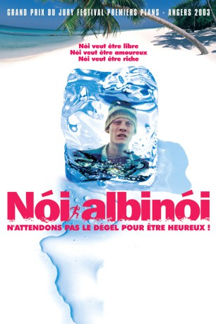

#8024 Nói albínói
Alternativ: Noi Albinoi
 
 IMDB-Wertung: 7.4 / 10
IMDB-Wertung: 7.4 / 10  Metascore: 0
Metascore: 0 
Is he the village idiot or a genius in disguise? 17 year old Noi drifts through life on a remote fjord in the north of Iceland. In winter, the fjord is cut off from the outside world, surrounded by ominous mountains and buried under a shroud of snow. Noi dreams of escaping from this white-walled prison with Iris, a city girl who works in a local gas staion. But his clumsy attempts at escape spiral out of control and end in complete failure. Only a natural disaster will shatter Noi's universe and offer him a window into a better world.
Jahr: 2003
Dauer: 88 Minuten
FSK: 12
Land: Island Studio: Neue Visionen FilmverleihTonspuren:
Untertitel:
Auflösung: SD (624x352) Größe: 699 MB
Genre: Drama
Regisseur: Dagur Kári
Drehbuch: Dagur Kári
Soundtrack: Orri Jonsson, Dagur Kári
Darsteller:
 Tómas Lemarquis als Nói
Tómas Lemarquis als Nói- Unnar Reynisson als Dyravörður
- Þröstur Leó Gunnarsson als Kiddi Beikon
- Elín Hansdóttir als Íris
- Anna Friðriksdóttir als Lína
- Hjalti Rögnvaldsson als Óskar
- Pétur Einarsson als Prestur
- Kjartan Bjargmundsson als Gylfi
- Þorsteinn Gunnarsson als Þórarinn Skólastjóri
- Guðmundur Ólafsson als Alfreð Kennari
- Haraldur Jónsson als Teitur Sálfræðingur
- Gérard Lemarquis als Frönskukennari
- Greipur Gíslason als Dabbi
- Páll Loftsson als Pabbi Dabba / Bankastjóri
- Ásdís Thoroddsen als Bankastarfsmaður
- Ásmundur Ásmudsson als Barþjónn
- Óttarr Proppé als Starfsmaður í Herrafataverslun
- Gunnhildur Björk Elíasdóttir als Afgreiðsludama í sjoppu
- Sveinn Geirsson als Lögga 1 / Björgunarmaður
- Þorgeir Guðmundsson als Lögga 2
- Helgi E. Helgason als Sjónvarpsþulur
Datei: X:\2003(N-Z)\Nói albínói (2003, FSK12, 624x352).avi seit 16.01.2018
Festplatte: HD 2003-2004-2005(A-F)
 Es gibt insgesamt 46 Filme in der Gruppe '2003(N-Z)'
Es gibt insgesamt 46 Filme in der Gruppe '2003(N-Z)'